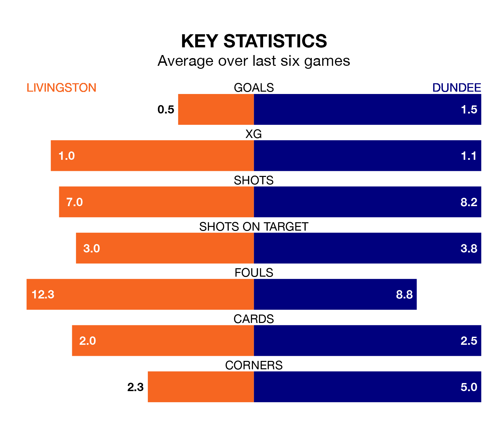

Livingston are on a terrible run ahead of hosting Dundee at the Tony Macaroni Arena on Saturday, with just two points collected from their last six games.
Livingston have picked up two draws and four losses in their last six Premiership games, and face a Dees side whose last six games have brought one win and two draws.
Livingston are bottom of the table after 21 games, of which they have won two and drawn six, earning 12 points.
Dundee are four places ahead of the home team in eighth, with five wins and seven draws putting them on 22 points.
In the last 10 years, Livingston and Dundee have played each other on 11 occasions. Livingston won four of them, Dundee five, and they drew twice.
On average, Livingston scored 1.2 goals and the Dees 0.8 in those matches.
Their last meeting was on November 5, when Dundee won 1-0 at home.
With 12 goals in 21 games so far this season, Livingston are the league's lowest scorers with 0.6 goals per game. And they are conceding more than average, letting in 32 goals at a rate of 1.5 per game.
The Dees, meanwhile, are average scorers, with 1.3 goals per game. They have conceded 1.6 goals per game.
With Trevor Carson between the sticks, the visitors can rely on one of the league's safest pair of hands. He has kept seven clean sheets in his 18 appearances this season in Premiership.
In Livingston's net, Shamal George has four clean sheets in 17 games.
Livingston's last match was on January 2, a 2-1 loss against Hearts, with Andrew Shinnie getting the goal for Livingston.
Dundee lost 3-2 against Hearts last time out, on Tuesday, with Jordan McGhee and Lyall Cameron on the scoresheet.
Updated: 08:51 (UTC), 25/01/24